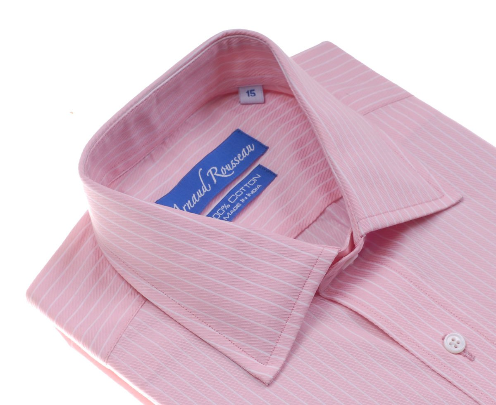
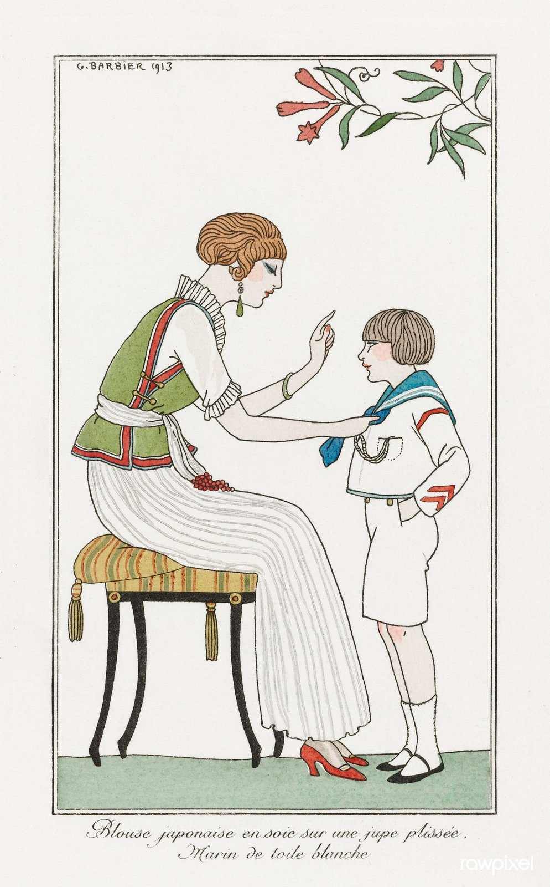
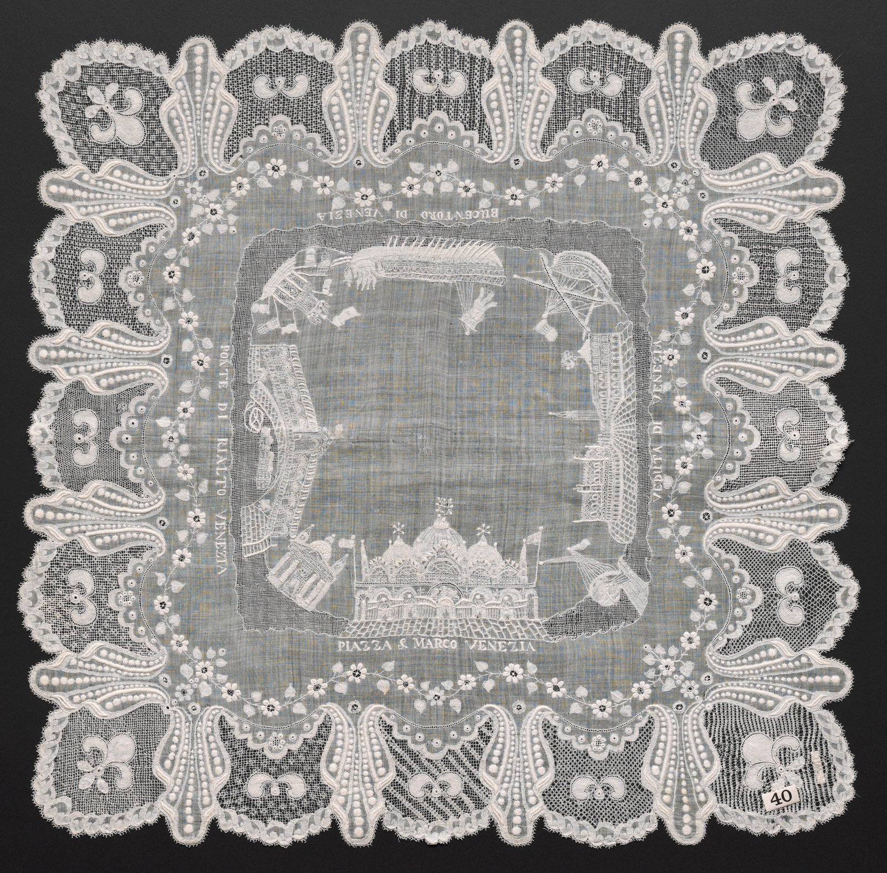
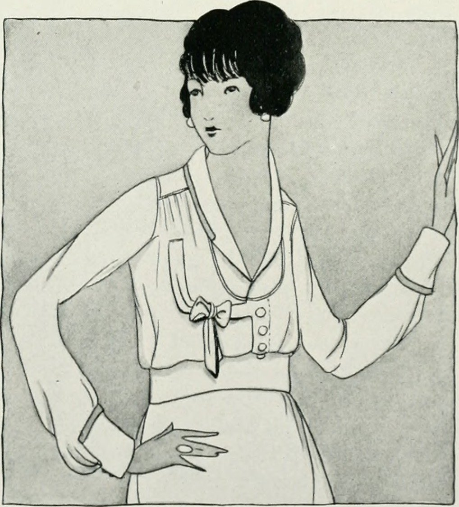
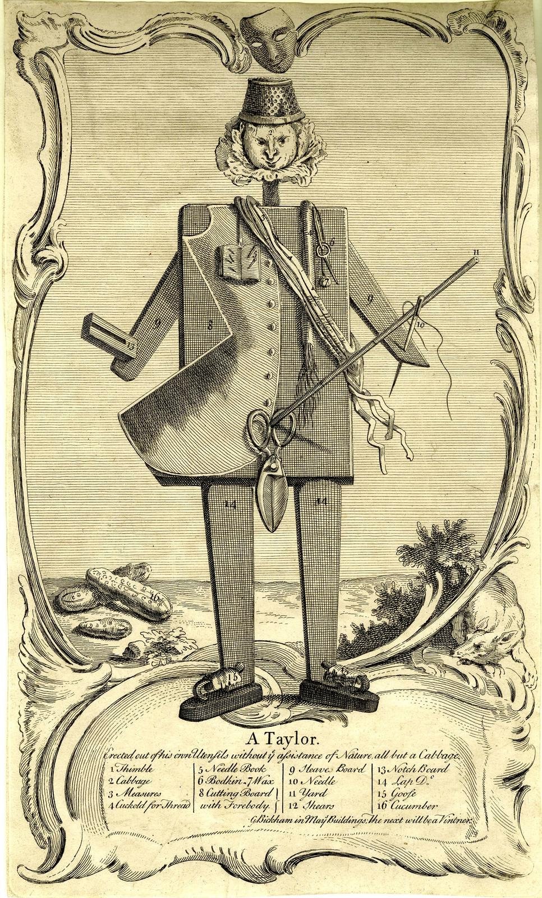

THE TRANSLUCENT ELEGANCE OF HEIRLOOM CAMBRIC CLOTH.
Cambric Panache resurrects the fabled batiste textile traditions of 16th-century northern France. Woven from gossamer long-staple cotton and Belgian flax, our bespoke garments balance featherlight breathability with architectural sartorial crispness.

THE ARCHITECTURE OF TRANSLUCENT LINEN
Each garment is hand-drafted on parchment paper, precision-cut with forged tailoring shears, and assembled with single-needle enclosed French seams.

The Versailles Poet Chemise
Gathered drop-shoulder silhouette featuring hand-pleated cambric bib, standing band collar, and billowing sleeves gathered into delicate pearl-buttoned cuffs.
Examine Silhouette →
The Monogrammed Mouchoir
Featherlight pocket squares and court handkerchiefs hand-hemmed with microscopic rolled stitches and personalized with intricate botanical monograms.
Examine Silhouette →
The Diplomatic Evening Shirt
Structured marcella or piqué bib front integrated into sheer 200s cambric body, accompanied by removable stud placket and double French cuffs.
Examine Silhouette →
THE ART OF THE ENCLOSED FRENCH SEAM
Fine cambric cloth is celebrated for its ethereal, semi-translucent drape. Ordinary overlocked stitches would reveal unsightly fraying threads along inner edges. Our seamstresses execute delicate French seams where raw fabric allowances are encapsulated entirely inside double-folded silk thread passes.
- ✓ Eighteen microscopic stitches per inch executed with fine Parisian silk thread.
- ✓ Australian mother-of-pearl buttons cross-stitched with reinforced crow-foot anchors.
- ✓ Removable brass collar stays maintaining crisp spread geometry under heavy silk ties.
SCULPTED TO PERSONAL ANATOMICAL PROPORTIONS
No two shoulders slope at identical angles. During your private fitting at our Manhattan atelier, our master cutter captures twenty-four distinct anatomical coordinates, translating your posture into an individualized cardboard pattern preserved indefinitely in our client archives.
Every pattern drafted at Cambric Panache accounts for natural posture curvature, armhole depth, and collar stance balance, sculpted by hand into archival drafting paper.